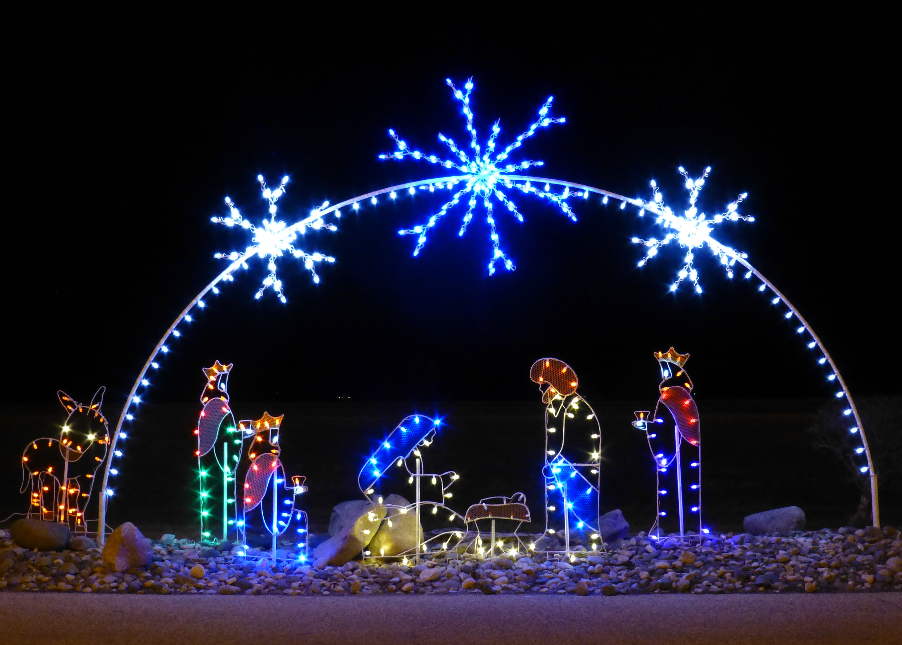
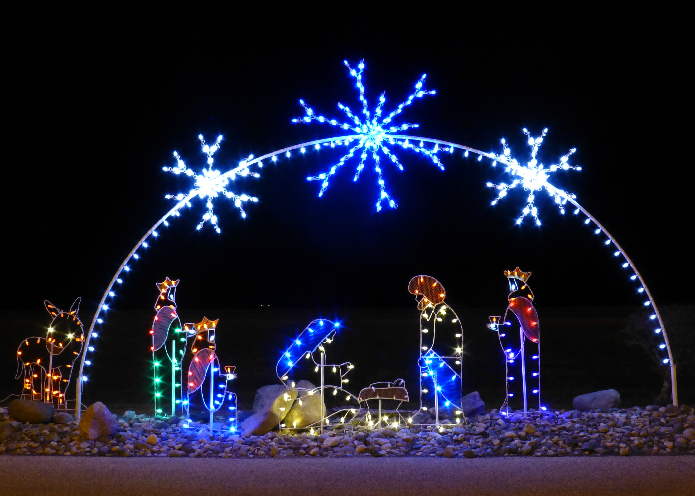

Рождество
Рождество - это один из самых важных и любимых праздников в христианском мире. Он отмечается 25 декабря по григорианскому календарю и 7 января по юлианскому календарю. Этот день посвящен рождению Иисуса Христа, Сына Божьего, который пришел на землю, чтобы спасти людей от греха и смерти.
Рождественские традиции и обычаи могут различаться в разных странах и регионах, но общими элементами являются украшение дома и елки, посещение церкви, обмен подарками, пение колядок и угощение рождественскими блюдами. Некоторые из самых известных рождественских символов - это Санта-Клаус, олени, снеговики, звезды, ангелы, свечи и рождественские венки.
Рождество - это также время, когда люди делятся радостью, любовью и миром с близкими и нуждающимися. Рождество напоминает нам о важности добра, сострадания и прощения в нашей жизни. Рождество - это праздник надежды и света, который объединяет миллионы людей по всему миру.
Рождество
 
